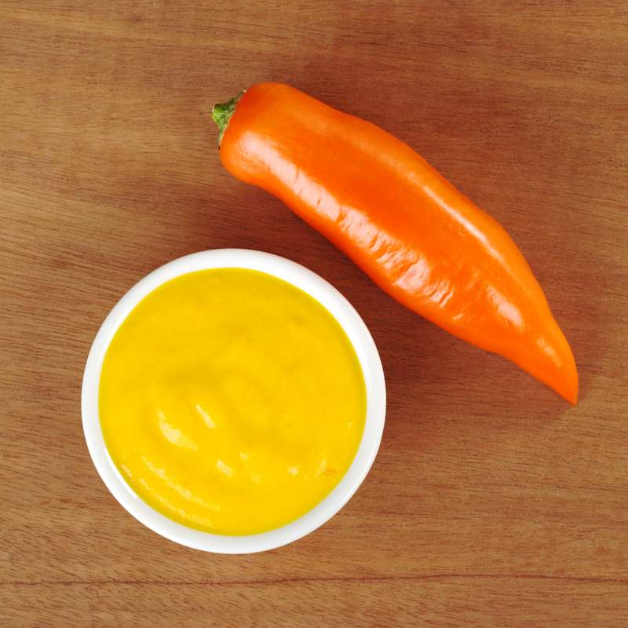
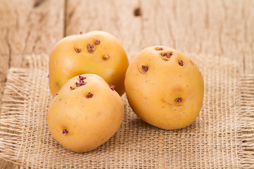
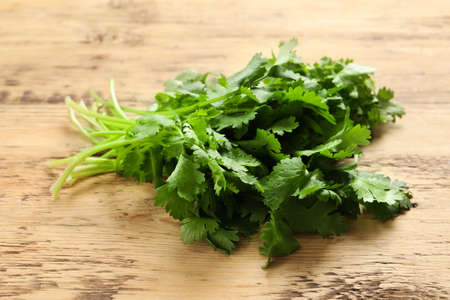
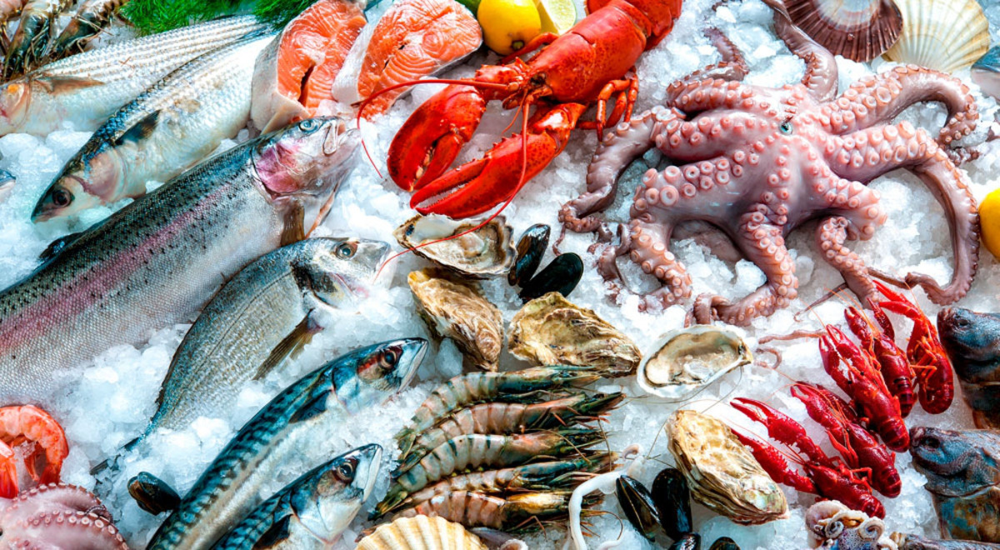

La cocina peruana es rica y diversa, con una amplia gama de
ingredientes que se utilizan en una variedad de platos deliciosos.
Aquí tienes algunos de los ingredientes más importantes y
representativos de la cocina peruana, junto con sus orígenes y usos
principales
Ají Amarillo

Este chile amarillo de sabor picante y frutal es esencial en la
mayoría de los platos peruanos. Se utiliza en la preparación de
la salsa de ají amarillo y se encuentra en platos como el ají de
gallina y el ceviche.
Papa Amarilla

Originaria de los Andes peruanos, la papa amarilla es una
variedad única de papa con una textura suave y un sabor
distintivo. Se utiliza en platos como la causa limeña y el
ajiaco.
Cilantro

El cilantro fresco es una hierba aromática que se usa en muchas
preparaciones peruanas, como el ceviche y el aderezo verde para
el pollo a la brasa.
Maíz Morado
Este maíz de color morado es un ingrediente tradicional en la
cocina peruana. Se utiliza para hacer la chicha morada, una
bebida refrescante, y también se encuentra en algunos postres.
Pescado y Mariscos

Dada la extensa costa peruana, los pescados y mariscos frescos
son esenciales en la cocina peruana. Se utilizan en el ceviche,
el tiradito, el arroz con mariscos y muchos otros platos